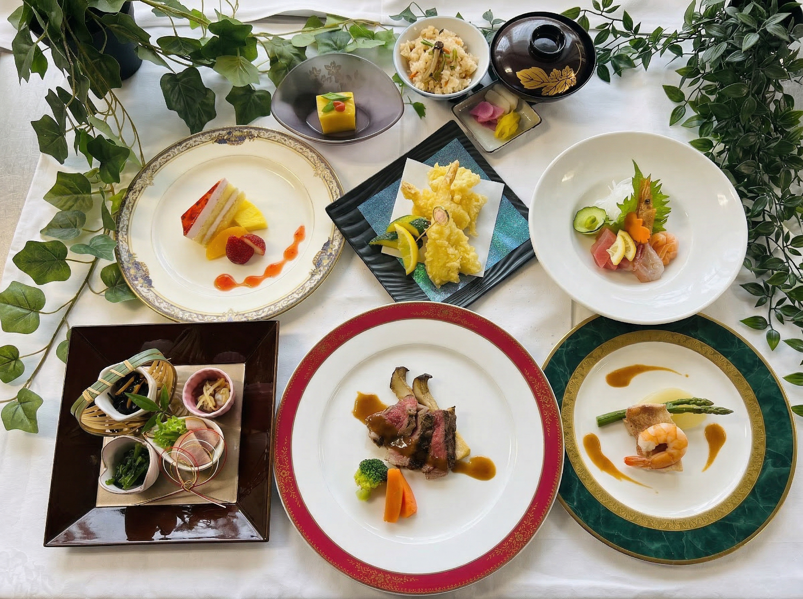
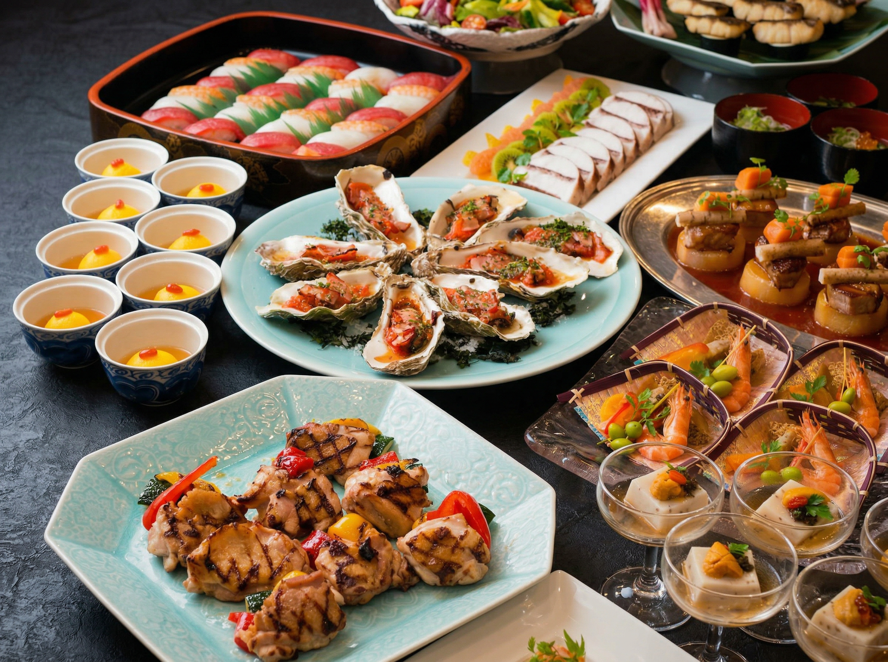

OUR STRENGTHS
名鉄岐阜駅目の前の好立地。JR岐阜駅からも徒歩5分で、遠方からのゲストも迷わずお越しいただけます。
3室に分割可能な大宴会場から、落ち着いた雰囲気が魅力の和空間まで。参加人数やイベントの趣旨に合わせて最適な空間を選択いただけます。
スクール形式、ロの字、コの字、円卓パーティーなど、あらゆるニーズに対応。経験豊富な専任スタッフが目的に最適な設営をトータルにサポートいたします。
CUISINE
厳選された地元の食材、季節の移ろいを感じる彩り。会席料理から、カジュアルな立食ビュッフェ、会議用のお弁当まで、ご予算と用途に合わせて幅広くご提案いたします。


会場・料理・備品を選ぶだけで概算料金がすぐに分かります。見積書(案)のPDFダウンロードも可能。そのままお問い合わせフォームへ送信できます。
1F レストラン「モンテ」：少人数での打ち合わせや、会議後のカジュアルなティータイムにご利用ください。開放感のある空間で、ホテル特製のランチも人気です。